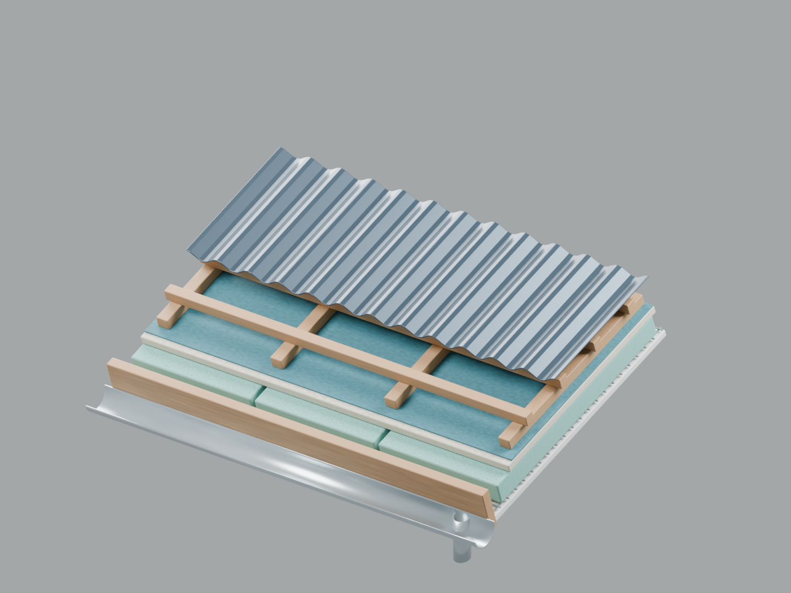
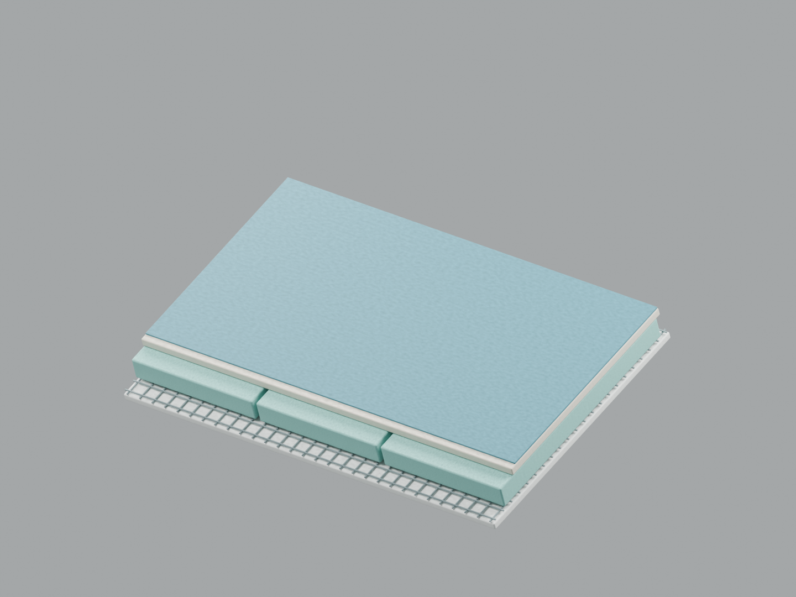
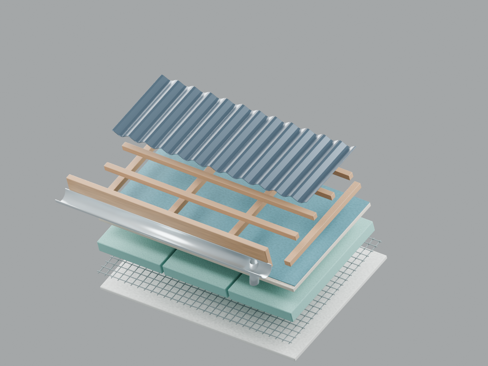

Model, w którym każda warstwa istnieje naprawdę.
Edytowalny detal 3D z oddzielnymi bryłami, materiałami proceduralnymi i kolekcjami. Po ukryciu pokrycia pozostają kompletne warstwy spodnie.
8 kolekcji73 obiekty meshNatywny plik .blendBlender 5.2.2 LTS
Pobierz kompletną próbkę ZIPPobierz plik .blend



Co można sprawdzić w pliku?
- Każdą z 8 kolekcji można niezależnie ukrywać i ponownie włączać.
- Siatka, izolacja, poszycie, łaty, profilowane pokrycie i rynna mają własną geometrię.
- Materiały są zapisane w scenie; model nie wymaga zewnętrznych plików tekstur.
- Test ponownego otwarcia oraz ukrywania kolekcji przeszedł natywnym silnikiem Blendera.
Raport weryfikacji · Lista warstw · Instrukcja · Skrypt tworzący scenę
To samodzielnie przygotowana próbka warsztatu, z fikcyjnymi wymiarami i poglądowym układem warstw. Nie jest realizacją komercyjną ani dokumentacją konstrukcyjną. Nie zawiera obrazu referencyjnego klienta, jego modelu ani jego materiałów. Właściwy model powstaje według osobno uzgodnionej referencji i parametrów.